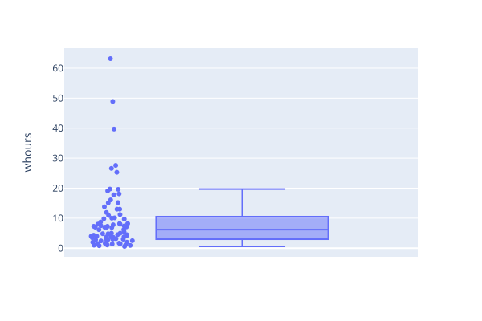
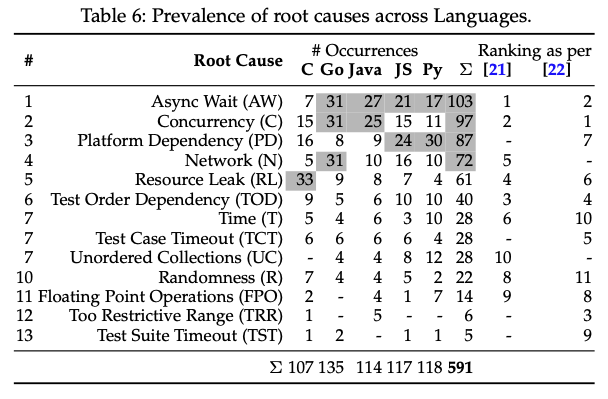
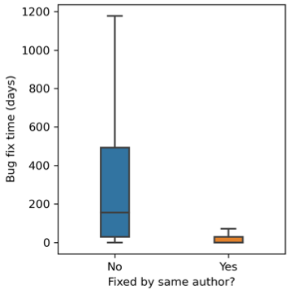
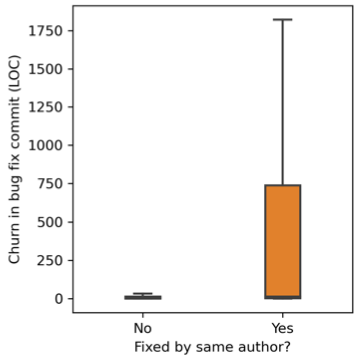
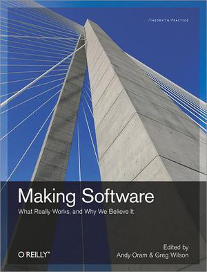
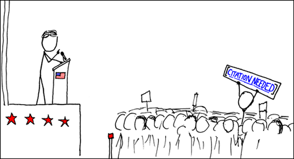

Software Engineering’s
Greatest Hits
2024-11-01
In the Beginning
- Seven Years’ War (actually lasted nine years)
- British lost 1512 sailors to enemy action…
- …and almost 100,000 to scurvy
Irony
- James Lind (1716–94)
- 1747: first controlled medical experiment
| cider | sea water |
| vitriol | vinegar |
| barley water | oranges |
- Those given oranges survived
- Admiralty ignored the result until 1794
It Took a While
- 1950: Hill & Doll publish a case-control study comparing smokers with non-smokers
- Found that smoking causes lung cancer…
- …and that many people would rather fail than change
Is Software Engineering?
- “The use of the scientific method to design novel things”
- So… no
Chickens and Eggs
- We know a lot about software and how it’s built
- But students aren’t taught methods or results in school
- And we’re all too busy to learn them later
We Can Do Better
- Steady growth of empirical studies over 30 years
- Fueled in part by data from open source projects
- Many studies are small, and not all are well done
- But we can refute some myths and reveal new insights
Are Some Languages Better?
Stefik2013: “An Empirical Investigation into Programming Language Syntax”
- Measured how easily novices could read:
- Perl
- Quorum: the language their team is building
- Randomo: syntax “designed” by rolling D&D dice
- Perl is as hard for novices to learn as a language with a randomly-designed syntax
Are Some Languages Better?
- Second study
- More subjects
- Multiple assessment strategies
- Languages in the C family are as hard for novices to learn to read as a randomly-designed language
- Ruby and Python are significantly easier
- Quorum is easier still
Productivity
- Prechelt2000 had programmers implement the same thing in the language of their choice
- How long did it take?

Productivity
- Shortest and longest times were 0.6 and 63 hours
- Ratio is 150X (!)
- But people used 7 different languages
- If we only look at Java, times are 3.8 vs. 63 hours (17X)
- But comparing best and worst exaggerates differences
- 90th percentile vs. 50th gives 3.7X
Test-Driven Development
Shull2010: “How Effective is Test-Driven Development?”
…evidence from controlled experiments suggests an improvement in productivity when TDD is used. However…pilot studies provide mixed evidence, some in favor of and others against TDD. In the industrial studies…evidence suggests that TDD yields worse productivity. Even when considering only the more rigorous studies…the evidence is equally split for and against a positive effect.
Test-Driven Development
Fucci2016: “An External Replication on the Effects of Test-driven Development Using a Multi-site Blind Analysis Approach”
- Replication study, 39 professionals, real projects
- No significant difference between test-first and test-last development
- “The claimed benefits of TDD may…rather [be] due to the fact that [it] encourages fine-grained steady steps that improve focus and flow.”
I practice TDD…and it works great. We don’t need to prove that it works anymore.
Nobody Knows Anything
Altadmri2016: “37 Million Compilations: Investigating Novice Programming Mistakes in Large-Scale Student Data”
- Ask educators for learners’ most common mistakes
- Compare their answers to empirical data
- Weak consensus among educators
- Weak correlation with observations
- Educator experience had only weak impact on results
Nobody Knows Anything
Most common actual errors are:
- Mis-matched parentheses (not confusing
=with==) - Invoking methods with the wrong arguments
- Reaching end of non-
voidmethod withoutreturn
The three that take the most time to fix are:
- Confusing short-circuit logical and bitwise operators
- Using
==instead of.equalsto compare strings - Ignoring the return value from a non-void method
A Caution
Begel2014: “Analyze This! 145 Questions for Data Scientists in Software Engineering”
- Ask a bunch of developers to propose questions, then ask another bunch to rate them
- Developers want to know how people actually use their products
- They don’t want assessments of individual performance
- Because they’re afraid such measures will be weaponized
Coding in the Dark
Hicks2022: “It’s like coding in the dark: The need for learning cultures within coding teams”
- “…the work that code writers needed to do to understand code often did not feel like what was rewarded in the evaluation of their work”
- “Despite stated ideals about knowledge sharing…this work was often contradicted with negative cues from colleagues about what was truly valued”
- “This tension was exacerbated by code writers’ fears about not looking like an engineer…”
- “Code writers navigated this by divesting from their own learning and from the invisible work of knowledge transfer”
- “[They] frequently expressed a poignant loneliness, even in highly resourced teams”
Open Source
Steinmacher2015: “Social Barriers Faced by Newcomers Placing Their First Contribution in Open Source Software Projects”
- Identify 58 potential barriers
- What matters most?
- How easy it is to get set up to make a contribution
- How easy it is to find a task to start with
- Other work has also identified “how warmly first contribution was received”
There Is No “Geek Gene”
Patitsas2016: “Computer Science Grades Are Not Bimodal”
- The “geek gene” is computing’s most enduring and damaging myth
- In fact, only 5.8% of course grade distributions at a large university were actually multi-modal
- But CS faculty are more likely to see distributions as bimodal if they think they’re from a CS class
- Even more likely if they believe some students are innately predisposed to do well in CS
Code Metrics
- Lots of code metrics have been proposed
- Halstead’s measures
- Cyclomatic complexity
- Many object-oriented measures
- But nothing works better than counting lines of code
- ElEmam2001: “Confounding Effects of Class Size on the Validity of Object-Oriented Metrics”
- Herraiz2010: “Beyond Lines of Code: Do We Need More Complexity Metrics?”
Test Flakiness
Costa2022: “Test Flakiness Across Programming Languages”

Who Fixes What?
- Original authors fix their own simple bugs much faster than other people (Zhu2021)
- But are more likely to fix or change other things at the same time


Language Features
- Nobody knows anything…
Miscellaneous
- Design patterns
- Teaching people design patterns makes them better programmers (Tichy2010)
- Three experiments demonstrated cause and effect
- This is not obvious
- Maybe good programmers are just more likely to use patterns
- Fuzz testing
- Invented by accident in 1988 (Miller2021)
- 25-33% of Unix utilities crashed when fuzzed
- Thirty years later, “only” 12-20% still crash
- The Fuzzing Book
Miscellaneous
- Strong typing catches about 15% of bugs
(Gao2017)
- Which is a lot or a little depending on your point of view
- Only 6-17% of configuration options are set by most users
(Xu2015)
- Only 2%-8% of parameters are configured by more than 90% of users
- Secret management is a solved problem
- But most developers don’t know the solutions (Basak2023)
- Protestware is on the rise (Fan2024)
- Machine learning systems are bloated and vulnerable
(Zhang2024)
- “Through experimentation with 15 machine learning containers from TensorFlow, PyTorch, and Nvidia, we show that bloat accounts for up to 80% of machine learning container sizes, increasing container provisioning times by up to 370% and exacerbating vulnerabilities by up to 99%.”
What Hasn’t Worked?
- People have tried explaining all of this before

What Might?
- Start with a little data science
- Using software engineering datasets (because people learn best when examples are relevant)
- And Python (because computer science students will probably already know it)
- Academically defensible (“Look, math!”)
- And attractive to students
- Then replicate a few simple results
- At this point, students will be able to understand and assess the claims
When We’re Done
Assignment #3
Given version control repositories for six software projects, determine whether long functions are more likely to be buggy than short ones.
- Requires tool use, model building, and statistics
- Require students to do science
- So they understand it
- So they value it
Conclusions

- The world needs more of this
- What are you waiting for?
Thank You

start where you are · use what you have · help who you can